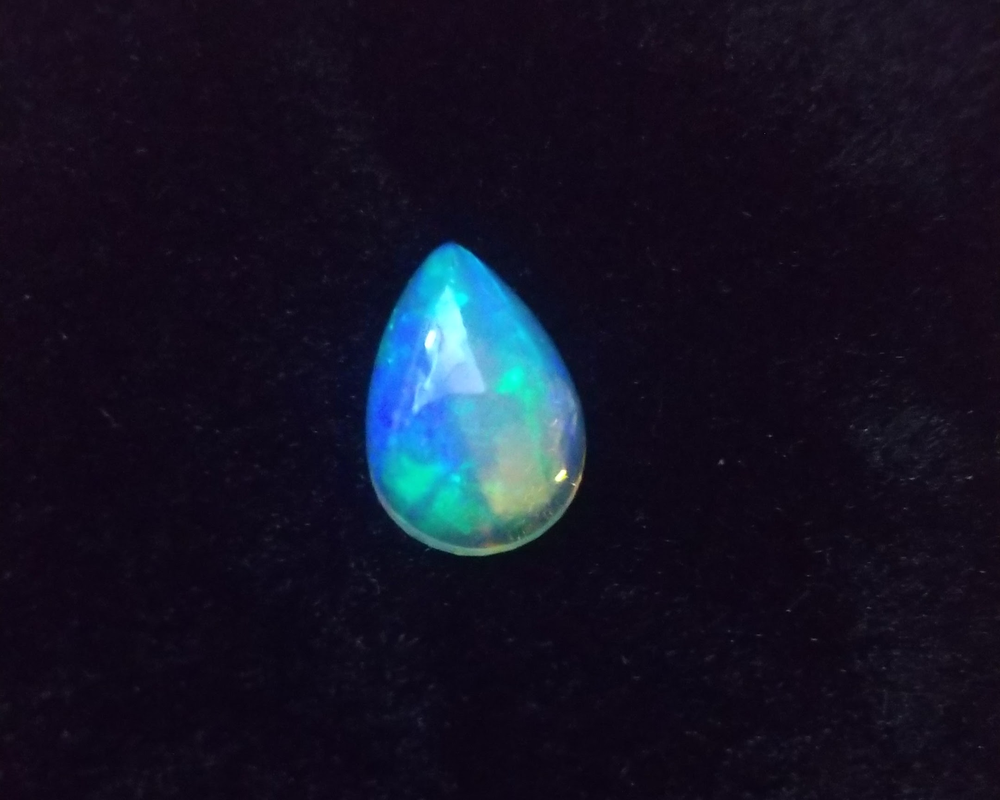
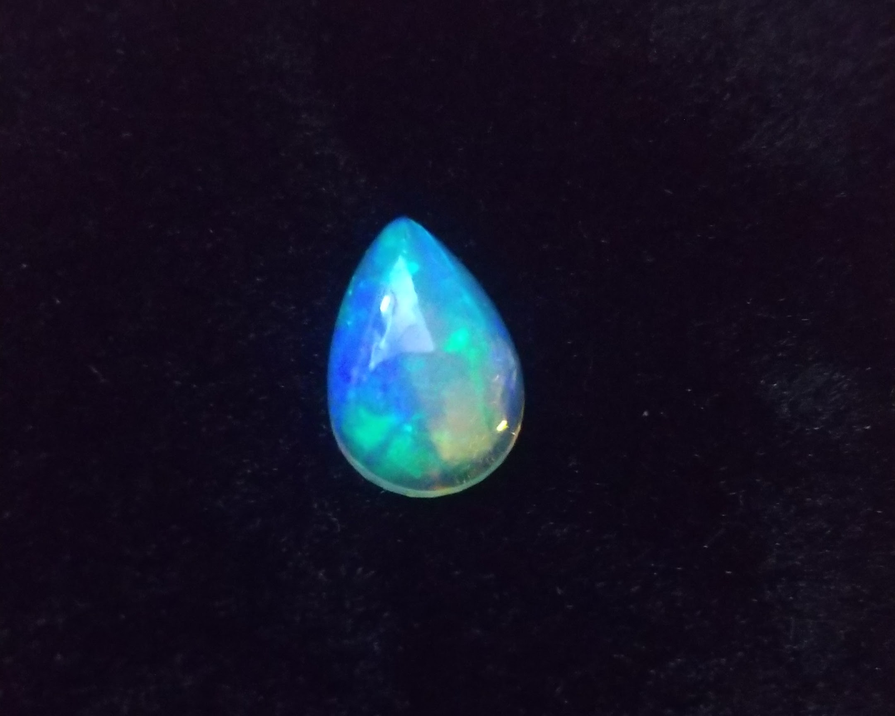

自己紹介
- 所属 東京工科大学 メディア学部2年
- 名前 山之井遥珂
- 学籍番号 M0A23287
- 誕生日 1月30日
趣味
- 宝石
宝石を集めるのが好きです。主に12月頃に池袋で開催される東京ミネラルショーというイベントで宝石を買っています。 基本的にルース(石のみ)で買うことが多いのでたまに勿体なく感じてハンドメイドで ペンダントトップに加工したりもします。 ミネラルショーに行く大体の宝石が500円くらいから買うことができるのでほぼ毎年何万円か持って池袋に行っています。 たまに穴が開いているものが売っているのですが、買う時にはほとんど気にしていないけれどもハンドメイドでアクセサリーにするときに穴の有難さを感じます。 ラピスラズリの青が一番好きです。

 

- イラスト
中学生からイラストを描いています。ノートの端に鉛筆で絵を描いたり、
AAA...
連絡先
- G-mail：m0a232873d@edu.teu.ac.jp
- github:Y-haruka0130